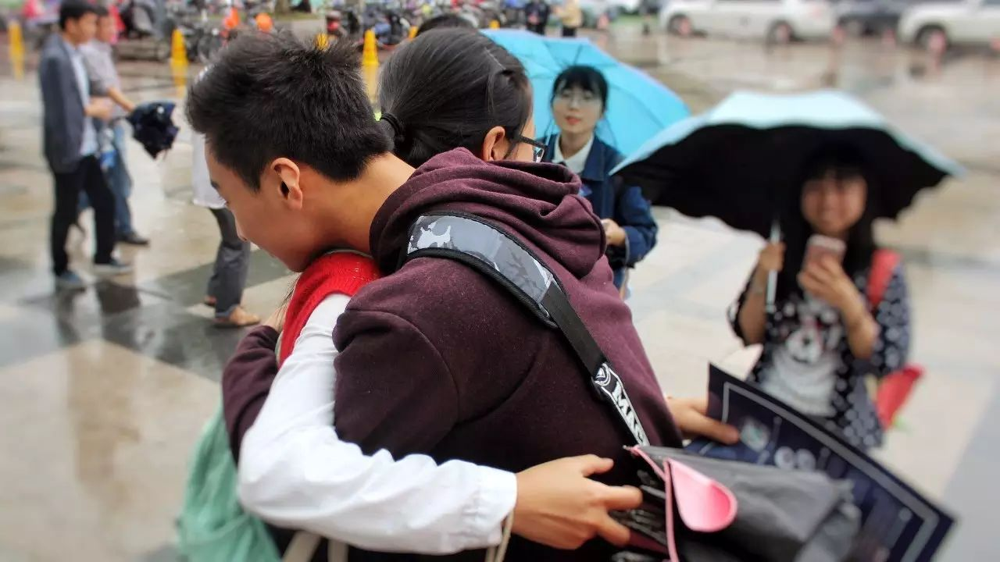

活动反馈 | 我们是如何将紫金港涂上紫色的

今年的紫色校园日（10.20）我们在浙大紫金港向路人发放了纪念品并送出了来自性少数的拥抱。当天天气并不是很好，但是志愿者和前来支持的朋友们都穿着紫色的衣服，在文化广场上形成了一道别样的风景。（关于紫色校园日点击这里查看）
·对校园欺凌说“不”
在活动的现场也有其他组织的友好力量前来报道记录我们的活动，并对我们的志愿者们进行了采访，我们向他们介绍了紫色校园日的来历和它的意义；有人对我们的行动提出了质疑，我们也向他们解释了这个活动的必要性。
性少数群体在生活中受到的很多欺凌是真实地存在的，很多人都看不到就以为没有这样的事。所以我们才要发声，让更多人看到，这样才能促使改变的产生。
其实在紫色校园日的前几天，我们在杭师大和浙大各举办了一场校园欺凌纪录片《伤痛》的放映交流会，方便大家更深入地理解这项活动的意义。在交流会的现场除了纪录片的主创们与大家进行了分享交流，一些曾受到或施加校园欺凌的同学说出了他们的故事。在交流的过程中，大家对老师在校园欺凌中的位置和作用进行了较为深入地探讨，让现场的各位都受益匪浅。
·交流会现场同学们分享自己的故事
志愿者参与到这样的一个倡导发声活动之中，对于志愿者本身也充满了意义，这是一个“赋权”的过程。即使一开始会对一些风险有所担心，但是当和其他人站在一起，喊出“反对校园欺凌，关注性少数群体”的口号时，就突然间觉得自己充满了力量，我不是一个人在战斗。下面听一听酷儿论坛志愿者们参加这次活动的感想吧。

·紫色校园日现场和路人拥抱的志愿者

安仔：
一开始觉得开心的点，是有外国小哥们一起来合照，会偶尔有人来想要了解这个群体活动。后来思考的是，这些活动的后续影响效果可以从哪些方面可以体现？（没有结果来体现，会让后期的改进变得很困难）个人体会，活动的实际操作，因为是第一次，显得有些稚嫩，有很多人太羞涩，不太敢开放自己，见到有兴趣凑上来的人要马上上去询问和对话，而不是自己在那里踌躇。很理解，从说不害怕到站在人群中的时候，还是需要很大勇气的。
·紫色校园日现场举着标语和彩虹旗的志愿者们

阿园：
虽然自己始终把自己吹捧成大义凛然大无畏敢于与恐同势力和外部阻力斗争到底的高大形象，但由于去年的经历我其实心里还是有点虚的，加上今天到得比较晚所以也没有帮上什么忙，更没有去向路人安利，这一点我要检讨自己。但是我觉得大家今天能出现，能够组成一群人，形成一个活动，就已经很棒了，这次活动也一定程度上促进了我们的自我认同。至于产生的影响，等多搞几次，我们自high够了之后再考虑也是可以的。
·紫色校园日现场举着标语和彩虹旗的志愿者们

琉璃：
透过氤氲着桂花香的十月江南细雨，我在朦胧中望见食堂楼下一抹摄人心魄的紫色。和那一抹“紫色”打过招呼后，同样身着紫色的我接过了精心制作的传单、标语牌和小册子。本来以为只是一个举标语，发传单的小活动，却在十月的桂花雨中，演变成了令所有在场的人都过目难忘的节目。紫色的衣着和紫色的标语牌引来了电视台采访的小记者，招来了支持者们无尽温暖的拥抱，甚至带来了国际友人们的微笑。被高举着的彩虹旗，最下面的条带亦是那天的紫色，与旗帜下方我们的紫衣融为一体，在被细雨淋得晶亮的文化广场大道上，汇成了一条梦幻般紫色的涓流。谁言人类肉眼对紫光最不敏感？紫色的涓流配上那震耳欲聋“反对校园霸凌”的口号，让旁边其他摊位的音响亦黯然失色；谁言紫色是“冷色”？或许没有什么，能比我们和支持者们相拥时的微笑更加温暖的了。
·紫色校园日现场接受采访的志愿者

文文：
这是我第一次在校园内进行这么公开的倡导类活动，能收到这么多支持真的很意外也很感动。那天的天气也不是很好，但是小伙伴们都很给力呀，对于最后的结果还是非常满意的~在过程中会有一些担心，刚开始的时候保安就找了上来，索性后来并没有什么问题。还有一些风险来自出柜的可能吧，但是和小伙伴们在一起就变得勇敢了！这个活动的初衷肯定是达到了的，有很多素不相识的路人表达了对我们的支持，勇敢地和我们的志愿者拥抱，我们也向ta们介绍了校园欺凌的现状。我能看到的最直接的效果就是我们公众号的粉丝数涨了很多呀（233）这说明有越来越多的人能关注到性少数这个群体，有更多人能支持我们的活动，让我们感觉非常有动力~（也有很多人表示想要成为志愿者加入我们嘿嘿）

·紫色校园日现场举着标语和彩虹旗的志愿者们